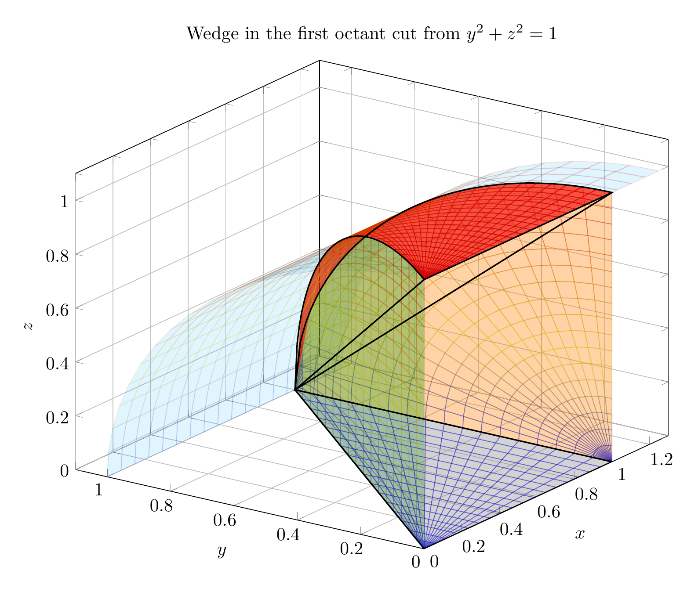
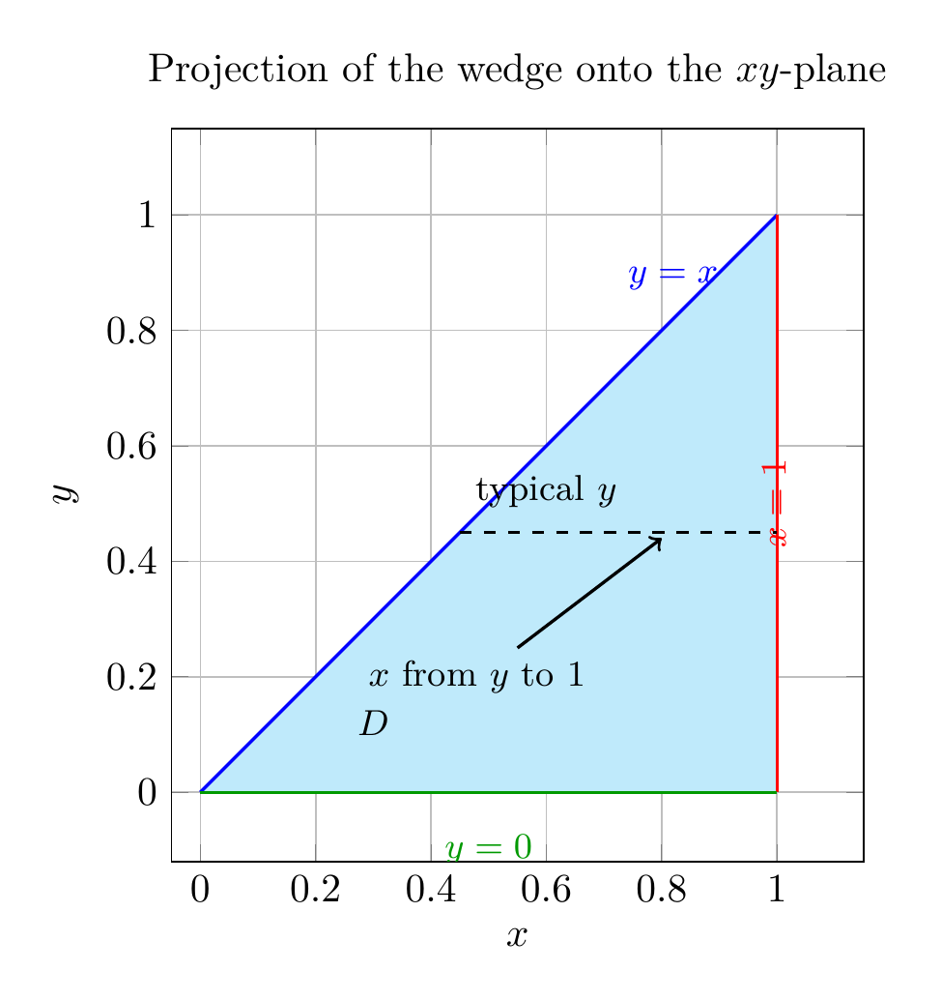
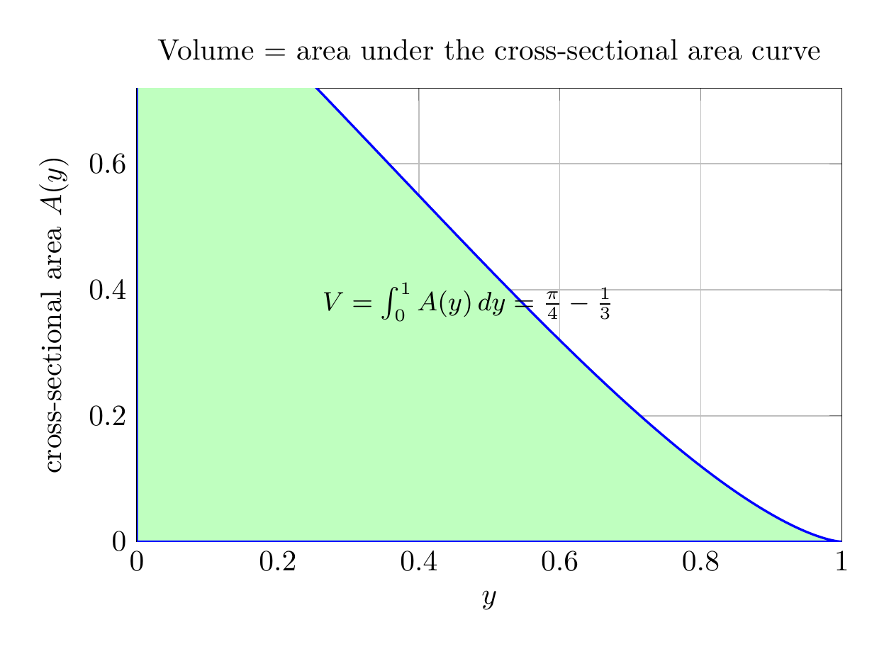

Please solve the problem in the following image.
(Image `20260928_145222_454386_utc_0800_0.png`. Alt text: Image: human_20260928_145222_454386_utc_0800)
20260928_145222_454386_utc_0800_0.png
End of problem
Answer
**Problem.** (a) Express the volume of the wedge in the first octant cut from the cylinder \(y^2+z^2=1\) by the planes \(y=x\) and \(x=1\) as a triple integral. (b) Find the exact value.
**Part (a): setting up the triple integral.**
The cylinder \(y^2+z^2=1\) runs parallel to the \(x\)-axis. In the first octant, \(z=\sqrt{1-y^2}\) with \(0\le y\le1\). The cutting planes \(y=x\) and \(x=1\) force
\[
0\le y\le x\le1.
\]
Thus the projection of the wedge on the \(xy\)-plane is the triangle
\[
D=\{(x,y):0\le y\le x\le1\}.
\]
For each \((x,y)\in D\), \(z\) goes from \(0\) to \(\sqrt{1-y^2}\). Hence
\[
\boxed{\;V=\iiint_E dV=\int_0^1\int_0^x\int_0^{\sqrt{1-y^2}} dz\,dy\,dx\;}
\]
Equivalently, changing the order of \(x\) and \(y\),
\[
V=\int_0^1\int_y^1\int_0^{\sqrt{1-y^2}} dz\,dx\,dy.
\]
---
\documentclass[border=10pt]{standalone}
\usepackage{pgfplots}
\pgfplotsset{compat=1.18, trig format plots=rad}
\begin{document}
\begin{tikzpicture}
\begin{axis}[
width=13cm, height=11cm,
view={-55}{25},
xlabel={$x$}, ylabel={$y$}, zlabel={$z$},
xmin=0, xmax=1.3, ymin=0, ymax=1.1, zmin=0, zmax=1.1,
title={Wedge in the first octant cut from $y^2+z^2=1$},
grid=major,
]
% Cylinder y^2 + z^2 = 1, first octant, along x-axis
\addplot3[surf, opacity=0.12, draw=none, color=cyan, domain=0:1.25, y domain=0:pi/2, samples=18, samples y=18]
({x}, {cos(y)}, {sin(y)});
% Plane x = 1: quarter disk inside the cylinder
\addplot3[surf, opacity=0.35, draw=none, color=orange, domain=0:1, y domain=0:pi/2, samples=18, samples y=18]
({1}, {x*cos(y)}, {x*sin(y)});
% Plane y = x
\addplot3[surf, opacity=0.30, draw=none, color=green!60!black, domain=0:1, y domain=0:1, samples=18, samples y=18]
({x}, {x}, {y*sqrt(1-x^2)});
% Top surface z = sqrt(1 - y^2) over D: x in [0,1], y in [0,x]
\addplot3[surf, opacity=0.60, draw=none, color=red, domain=0:1, y domain=0:1, samples=22, samples y=22]
({x}, {x*y}, {sqrt(1-(x*y)^2)});
% Bottom surface z = 0 over D
\addplot3[surf, opacity=0.35, draw=none, color=gray, domain=0:1, y domain=0:1, samples=18, samples y=18]
({x}, {x*y}, {0});
% Key intersection curves
\addplot3[thick, black, domain=0:1, samples=60] ({1}, {x}, {sqrt(1-x^2)});
\addplot3[thick, black, domain=0:1, samples=60] ({x}, {x}, {sqrt(1-x^2)});
\addplot3[thick, black, domain=0:1, samples=10] ({x}, {0}, {0});
\addplot3[thick, black, domain=0:1, samples=10] ({x}, {x}, {0});
\addplot3[thick, black, domain=0:1, samples=10] ({1}, {x}, {0});
\addplot3[thick, black, domain=0:1, samples=10] ({x}, {0}, {1});
\end{axis}
\end{tikzpicture}
\end{document}

pgfplots_0.png
---
The 3D visualization shows the cylinder \(y^2+z^2=1\), the cutting plane \(x=1\) (orange), the cutting plane \(y=x\) (green), and the top surface \(z=\sqrt{1-y^2}\) (red). The wedge is the solid inside the cylinder, above \(z=0\), and between \(y=x\) and \(x=1\).
---
**The \(xy\)-projection.** The triangular region in the \(xy\)-plane is
\[
D=\{(x,y):0\le y\le x\le1\}.
\]
A typical horizontal slice has \(x\) running from \(y\) to \(1\), which is exactly the order used in the triple integral \(\int_0^1\int_0^x\cdots dy\,dx\) or, after reversing the order, \(\int_0^1\int_y^1\cdots dx\,dy\).
---
\documentclass[border=10pt]{standalone}
\usepackage{pgfplots}
\pgfplotsset{compat=1.18}
\begin{document}
\begin{tikzpicture}
\begin{axis}[
width=9cm, height=8cm,
axis equal image,
xmin=-0.05, xmax=1.15, ymin=-0.12, ymax=1.15,
xlabel={$x$}, ylabel={$y$},
title={Projection of the wedge onto the $xy$-plane},
grid=both,
]
% shaded triangular region D
\addplot[fill=cyan!25, draw=none] coordinates {(0,0) (1,1) (1,0)} \closedcycle;
% boundary y = x
\addplot[blue, thick, domain=0:1] {x};
% boundary x = 1
\addplot[red, thick] coordinates {(1,0) (1,1)};
% boundary y = 0
\addplot[green!60!black, thick] coordinates {(0,0) (1,0)};
% typical horizontal slice
\addplot[black, dashed, thick] coordinates {(0.45,0.45) (1,0.45)};
% labels
\node[text=blue, font=\small] at (axis cs:0.82,0.89) {$y=x$};
\node[text=red, font=\small, rotate=90, anchor=south] at (axis cs:1.04,0.5) {$x=1$};
\node[text=green!60!black, font=\small, anchor=north] at (axis cs:0.5,-0.05) {$y=0$};
\node[font=\small] at (axis cs:0.30,0.12) {$D$};
\node[font=\small] at (axis cs:0.60,0.52) {typical $y$};
\draw[->, thick] (axis cs:0.55,0.25) -- (axis cs:0.80,0.44);
\node[font=\small] at (axis cs:0.48,0.20) {$x$ from $y$ to $1$};
\end{axis}
\end{tikzpicture}
\end{document}

pgfplots_1.png
---
**Part (b): evaluating the triple integral.**
Starting from the \(dz\,dx\,dy\) order,
\[
V=\int_0^1\int_y^1\int_0^{\sqrt{1-y^2}} dz\,dx\,dy
=\int_0^1\int_y^1 \sqrt{1-y^2}\,dx\,dy
=\int_0^1 (1-y)\sqrt{1-y^2}\,dy.
\]
So the volume is the area under the cross-sectional-area curve \(A(y)=(1-y)\sqrt{1-y^2}\).
Split the integral:
\[
V=\int_0^1 \sqrt{1-y^2}\,dy-\int_0^1 y\sqrt{1-y^2}\,dy.
\]
The first integral is the area of a quarter unit disk:
\[
\int_0^1 \sqrt{1-y^2}\,dy=\frac{\pi}{4}.
\]
For the second, put \(u=1-y^2\), so \(du=-2y\,dy\):
\[
\int_0^1 y\sqrt{1-y^2}\,dy
=\frac12\int_0^1 u^{1/2}\,du
=\frac12\cdot\frac23=\frac13.
\]
Therefore
\[
V=\frac{\pi}{4}-\frac13.
\]
Equivalently, the table formulas
\[
\int\sqrt{a^2-u^2}\,du=\frac{u}{2}\sqrt{a^2-u^2}+\frac{a^2}{2}\arcsin\frac{u}{a}
\]
and
\[
\int u\sqrt{a^2-u^2}\,du=-\frac13(a^2-u^2)^{3/2}
\]
with \(a=1\), or a computer algebra system, give the same exact value. Numerically, \(V\approx0.45206\).
---
\documentclass[border=10pt]{standalone}
\usepackage{pgfplots}
\pgfplotsset{compat=1.18}
\begin{document}
\begin{tikzpicture}
\begin{axis}[
width=10cm, height=7cm,
xmin=0, xmax=1, ymin=0, ymax=0.72,
xlabel={$y$}, ylabel={cross-sectional area $A(y)$},
title={Volume = area under the cross-sectional area curve},
domain=0:1, samples=200,
grid=both,
]
\addplot[fill=green!25, draw=blue, thick] {(1-x)*sqrt(1-x^2)} \closedcycle;
\node[font=\small] at (axis cs:0.47,0.38) {$V=\int_0^1 A(y)\,dy=\frac{\pi}{4}-\frac{1}{3}$};
\end{axis}
\end{tikzpicture}
\end{document}

pgfplots_2.png
---
Thus the exact volume of the wedge is
\[
\boxed{\;V=\frac{\pi}{4}-\frac{1}{3}\;}
\]
The key idea is to project the wedge to the \(xy\)-plane; the cylinder supplies the \(z\)-limits, while the planes \(y=x\) and \(x=1\) supply the triangular \(xy\)-domain.